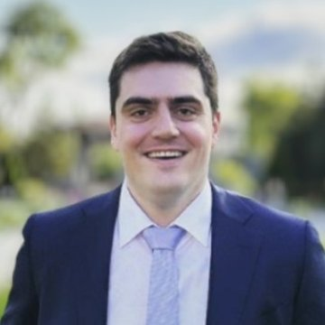

Phoenician Holdings acquires, builds, and operates car washes across the Mountain West, combining founder-led operating experience with independent, third-party data to verify every deal.

Rob brings over 6 years of experience in the car wash industry, specializing in acquisitions and corporate development. As former VP of Corporate Development at Cobblestone Car Wash, he played a key role in the company's rapid expansion, as featured on our Track Record page. Prior to Cobblestone, he worked in private equity and investment banking at Solamere Capital and Perella Weinberg Partners. He holds an MBA from Wharton and a BBA from Notre Dame.